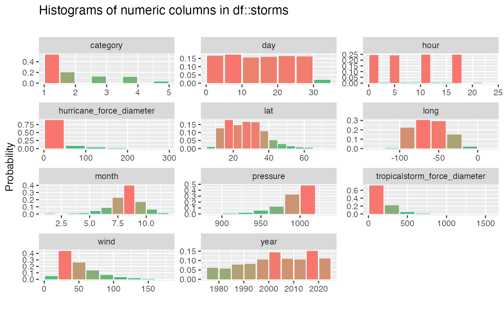
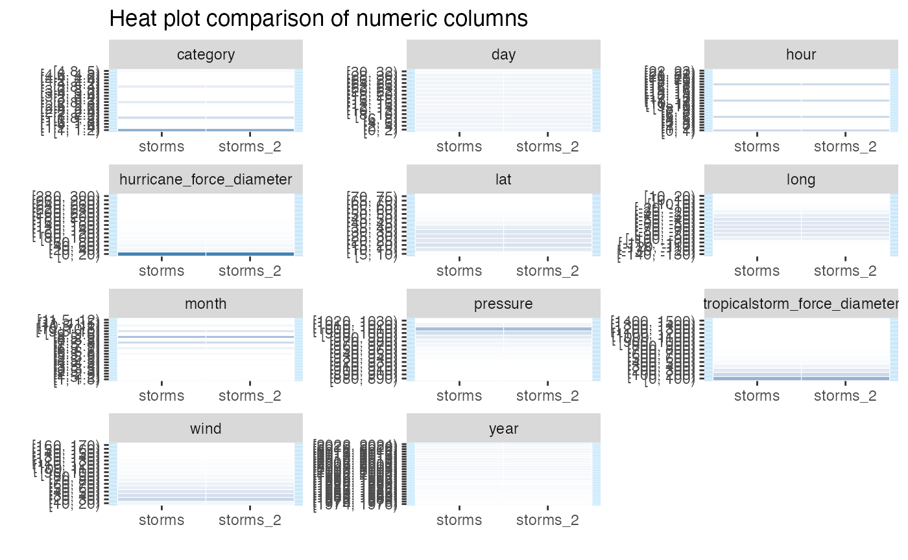

Numeric column summaries and visualisations
Source:vignettes/pkgdown/inspect_num_examples.Rmd
inspect_num_examples.RmdIllustrative data: starwars
The examples below make use of the starwars and
storms data from the dplyr package
For illustrating comparisons of dataframes, use the
starwars data and produce two new dataframes
star_1 and star_2 that randomly sample the
rows of the original and drop a couple of columns.
inspect_num() for a single dataframe
inspect_num() combining some of the functionality of
summary() and hist() by returning summaries of
numeric columns. inspect_num() returns standard numerical
summaries (min, q1, mean,
median,q3, max, sd),
but also the percentage of missing entries (pcnt_na) and a
simple histogram (hist).
library(inspectdf)
inspect_num(storms, breaks = 10)## # A tibble: 11 × 10
## col_name min q1 median mean q3 max sd pcnt_na hist
## <chr> <dbl> <dbl> <dbl> <dbl> <dbl> <dbl> <dbl> <dbl> <named >
## 1 year 1975 1995 2005 2004. 2016 2024 13.3 0 <tibble>
## 2 month 1 8 9 8.71 9 12 1.34 0 <tibble>
## 3 day 1 8 16 15.7 24 31 8.91 0 <tibble>
## 4 hour 0 5 12 9.10 18 23 6.74 0 <tibble>
## 5 lat 7 18.3 26.4 26.9 33.8 70.7 10.5 0 <tibble>
## 6 long -137. -78.6 -61.9 -61.3 -45.3 13.5 21.1 0 <tibble>
## 7 category 1 1 1 1.90 3 5 1.15 75.5 <tibble>
## 8 wind 10 30 45 50.1 65 165 25.5 0 <tibble>
## 9 pressure 882 986 1000 993. 1007 1024 18.8 0 <tibble>
## 10 tropicalst… 0 0 120 148. 220 1440 157. 45.8 <tibble>
## 11 hurricane_… 0 0 0 14.8 0 300 33.9 45.8 <tibble>The hist column is a list whose elements are tibbles
each containing the relative frequencies of bins for each feature. These
tibbles are used to generate the histograms when
show_plot = TRUE. For example, the histogram for
starwars$birth_year is
inspect_num(storms)$hist$pressure## # A tibble: 15 × 2
## value prop
## <chr> <dbl>
## 1 [880, 890) 0.000144
## 2 [890, 900) 0.000481
## 3 [900, 910) 0.00120
## 4 [910, 920) 0.00294
## 5 [920, 930) 0.00505
## 6 [930, 940) 0.0121
## 7 [940, 950) 0.0230
## 8 [950, 960) 0.0308
## 9 [960, 970) 0.0498
## 10 [970, 980) 0.0708
## 11 [980, 990) 0.120
## 12 [990, 1000) 0.205
## 13 [1000, 1010) 0.408
## 14 [1010, 1020) 0.0701
## 15 [1020, 1030) 0.000914A histogram is generated for each numeric feature by passing the
result to the show_plot() function:
inspect_num(storms, breaks = 10) %>%
show_plot()
inspect_num() for two dataframes
When comparing a pair of dataframes using inspect_num(),
the histograms of common numeric features are calculated, using
identical bins. The list columns hist_1 and
hist_2 contain the histograms of the features in the first
and second dataframes. A formal statistical comparison of each pair of
histograms is calculated using Fisher’s exact test, the resulting
p value is reported in the column fisher_p.
When show_plot = TRUE, heat plot comparisons are
returned for each numeric column in each dataframe. Where a column is
present in only one of the dataframes, grey cells are shown in the
comparison. The significance of Fisher’s test is illustrated by coloured
vertical bands around each plot: if the colour is grey, no p
value could be calculated, if blue, the histograms are not found to be
significantly different otherwise the bands are red.
inspect_num(storms, storms[-c(1:10), -1])## # A tibble: 11 × 5
## col_name hist_1 hist_2 jsd pval
## <chr> <named list> <named list> <dbl> <dbl>
## 1 year <tibble [25 × 2]> <tibble> 2.38e-6 1
## 2 month <tibble [22 × 2]> <tibble> 9.42e-7 1.000
## 3 day <tibble [16 × 2]> <tibble> 4.00e-7 1
## 4 hour <tibble [23 × 2]> <tibble> 2.82e-9 1
## 5 lat <tibble [14 × 2]> <tibble> 1.06e-7 1.000
## 6 long <tibble [16 × 2]> <tibble> 2.47e-7 1
## 7 category <tibble [20 × 2]> <tibble> 0 1.000
## 8 wind <tibble [16 × 2]> <tibble> 7.64e-8 1.000
## 9 pressure <tibble [15 × 2]> <tibble> 2.60e-7 1
## 10 tropicalstorm_force_diameter <tibble [15 × 2]> <tibble> 0 1
## 11 hurricane_force_diameter <tibble [15 × 2]> <tibble> 0 1
inspect_num(storms, storms[-c(1:10), -1]) %>%
show_plot()